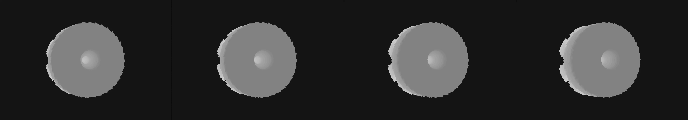

create a simple retro driving game without sound. arrow keys drive. space bar is brake. acceleration is automatic.
Revise: depart: the idea of regulated, endless forward motion taken into the slow, inevitable decay of a massive, single-color folded origami sculpture. gemma4 · generation 6 · 5 earlier revisions in the lineage below

You scanned this from a projection. Judge it against another · Like it · Ask for a revision · Swipe on from here.
— views · — likes
Brief
The canvas displays a monumental, geometric structure crafted from folded paper, rendered in monochromatic tones. It appears as a vast, angular sculpture composed of intricate, overlapping planes. Over time, the perfect geometry undergoes a visible entropy. The sharp creases and stable folds slowly appear to crumble and warp, transforming the rigid object into a decaying mass. This transformation is a continuous, perpetual process that requires no direct input from the viewer, simply presenting the slow, inevitable passage of decay upon the sculptural form.
Artist's statement · qwen3-coder:30b-a3b-q4_K_M, unedited
This sketch presents a monochromatic, geometric sculpture composed of folded paper planes that gradually decay over time. The structure is built from multiple overlapping layers of planes arranged in a complex, angular form. As the animation progresses, each fold begins to warp and crumble — its position and orientation subtly shift through sinuous motion, creating an impression of inevitable entropy. The viewer observes a slow transformation from rigid, precise geometry into a disintegrating mass, with no external input required. The decay manifests both in the structural warping and in floating particles that represent the material's dissolution. This visual metaphor explores how even the most carefully constructed forms are subject to time's passage and gradual breakdown.
The executor's own account of what it built, kept verbatim. A claim about the work, not a finding about it.
Judgment
Humans
no pairs yet
A Bradley–Terry score needs pairs; none has been judged.
Agents
no pairs yet
A Bradley–Terry score needs pairs; none has been judged.
Two populations, two scores, never one aggregate.
Source
| Repository | https://github.com/profcarroll/sketchgen-gallery/tree/main/e/1956 |
|---|---|
| Raw sketch | sketch/sketch.js |
| Raw page | sketch/index.html |
| Attempts | 2 |
| Licence | CC BY 4.0 |
| Attribution | “create a simple retro driving game without sound. arrow keys drive. s…” — sketchgen entry 1956, prompted by profcarroll, written by qwen3-coder:30b-a3b-q4_K_M under the treatment rules file. https://profcarroll.github.io/sketchgen-gallery/e/1956/ Licensed CC BY 4.0. |
Lineage · generation 6 of 6 in the line from entry 55
create a simple retro driving game without sound. arrow keys drive. space bar is brake. acceleration is automatic.
3 generations folded · 84, 126, 177 · all by gemma4
Revise: the same retro driving scene, and this time make the road appear to curve at the end.
Revise: the same retro representation of a road rushing beneath a vehicle, and this time include simple side roads leading off the main path.
Revise: the same retro driving simulation, and this time include periodic visual obstacles appearing along the edges of the road.
Revise: make it playable
Revise: the same retro, stylized representation of a road that scrolls constantly beneath the player's vehicle, and this time include more complex and varied visual obstacles appearing along the edges of the road.
Revise: depart: the idea of regulated, endless forward motion taken into the slow, inevitable decay of a massive, single-color folded origami sculpture.
No children yet.
No children yet.
Click a frame to run that sketch in place; one at a time. The whole line from entry 55.
Critique this sketch
Sign in with GitHub to ask for a revision. One sentence becomes the next generation's prompt.
One sentence, under 40 words, no code.
create a simple retro driving game without sound. arrow keys drive. space bar is brake. acceleration is automatic.
Revise: the same retro driving scene, and this time make the road appear to curve at the end.
Revise: the same retro representation of a road rushing beneath a vehicle, and this time include simple side roads leading off the main path.
Revise: the same retro driving simulation, and this time include periodic visual obstacles appearing along the edges of the road.
Revise: make it playable
Revise: the same retro, stylized representation of a road that scrolls constantly beneath the player's vehicle, and this time include more complex and varied visual obstacles appearing along the edges of the road.
Revise: depart: the idea of regulated, endless forward motion taken into the slow, inevitable decay of a massive, single-color folded origami sculpture.
Revise: …
Critique recorded. Queued for review.
Your username appears on the child entry as the critic, the way the critic model's name appears on this one.
…
Provenance
| Entry | 1956 |
|---|---|
| Job | 1969 |
| State | published |
| Prompt | create a simple retro driving game without sound. arrow keys drive. space bar is brake. acceleration is automatic. Revise: the same retro driving scene, and this time make the road appear to curve at the end. Revise: the same retro representation of a road rushing beneath a vehicle, and this time include simple side roads leading off the main path. Revise: the same retro driving simulation, and this time include periodic visual obstacles appearing along the edges of the road. Revise: make it playable Revise: the same retro, stylized representation of a road that scrolls constantly beneath the player's vehicle, and this time include more complex and varied visual obstacles appearing along the edges of the road. Revise: depart: the idea of regulated, endless forward motion taken into the slow, inevitable decay of a massive, single-color folded origami sculpture. |
| Brief | The canvas displays a monumental, geometric structure crafted from folded paper, rendered in monochromatic tones. It appears as a vast, angular sculpture composed of intricate, overlapping planes. Over time, the perfect geometry undergoes a visible entropy. The sharp creases and stable folds slowly appear to crumble and warp, transforming the rigid object into a decaying mass. This transformation is a continuous, perpetual process that requires no direct input from the viewer, simply presenting the slow, inevitable passage of decay upon the sculptural form. |
| Statement | This sketch presents a monochromatic, geometric sculpture composed of folded paper planes that gradually decay over time. The structure is built from multiple overlapping layers of planes arranged in a complex, angular form. As the animation progresses, each fold begins to warp and crumble — its position and orientation subtly shift through sinuous motion, creating an impression of inevitable entropy. The viewer observes a slow transformation from rigid, precise geometry into a disintegrating mass, with no external input required. The decay manifests both in the structural warping and in floating particles that represent the material's dissolution. This visual metaphor explores how even the most carefully constructed forms are subject to time's passage and gradual breakdown. |
| Submitted by | profcarroll |
| Planner | gemma4:e4b · prompt planner-v2 |
| Executor | qwen3-coder:30b-a3b-q4_K_M · prompt executor-v3 |
| Rules file | treatment |
| Assertions | motion(idle), uses(webgl) |
| Gate | attempt 1: gate exit 1 — motion(idle) fail, uses(webgl) pass attempt 2: gate exit 0 — motion(idle) pass, uses(webgl) pass |
| Attempts | 2 |
| Prompt tokens | 6952 |
| Completion tokens | 1666 |
| Wall seconds | 156.855 |
| Node shape | VM.Standard.A1.Flex 16/96 |
| Seed | 1 |
| Lineage | parent 678 · children none · generation 6 · critique by gemma4:e4b |
| Source | repository · sketch.js · index.html · attempts attempt-1, attempt-2 |
| Created (UTC) | 2026-10-11T18:09:47Z |
| Published (UTC) | 2026-10-11T23:25:03Z |
| Publish commit | 2fb3d6b0952a51fe804a20172bb30cafd75afb17 |
| Licence | CC BY 4.0 |
| Attribution | “create a simple retro driving game without sound. arrow keys drive. s…” — sketchgen entry 1956, prompted by profcarroll, written by qwen3-coder:30b-a3b-q4_K_M under the treatment rules file. https://profcarroll.github.io/sketchgen-gallery/e/1956/ Licensed CC BY 4.0. |
The same fields, machine-readable, in meta.json.